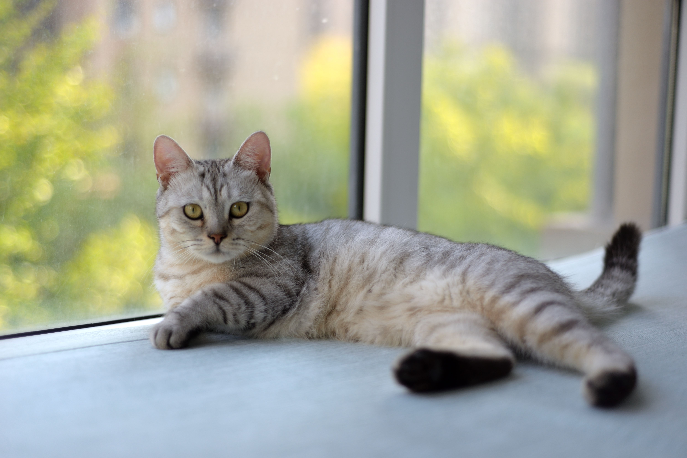
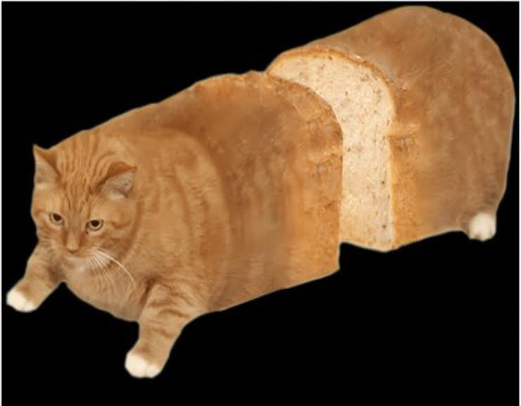
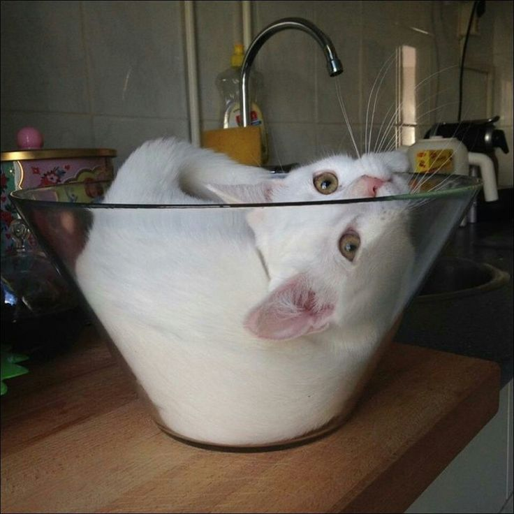
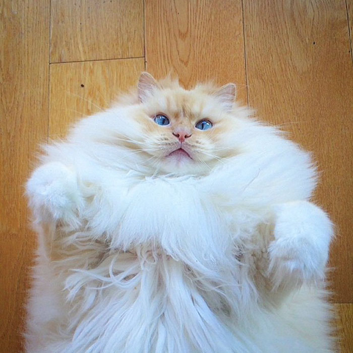
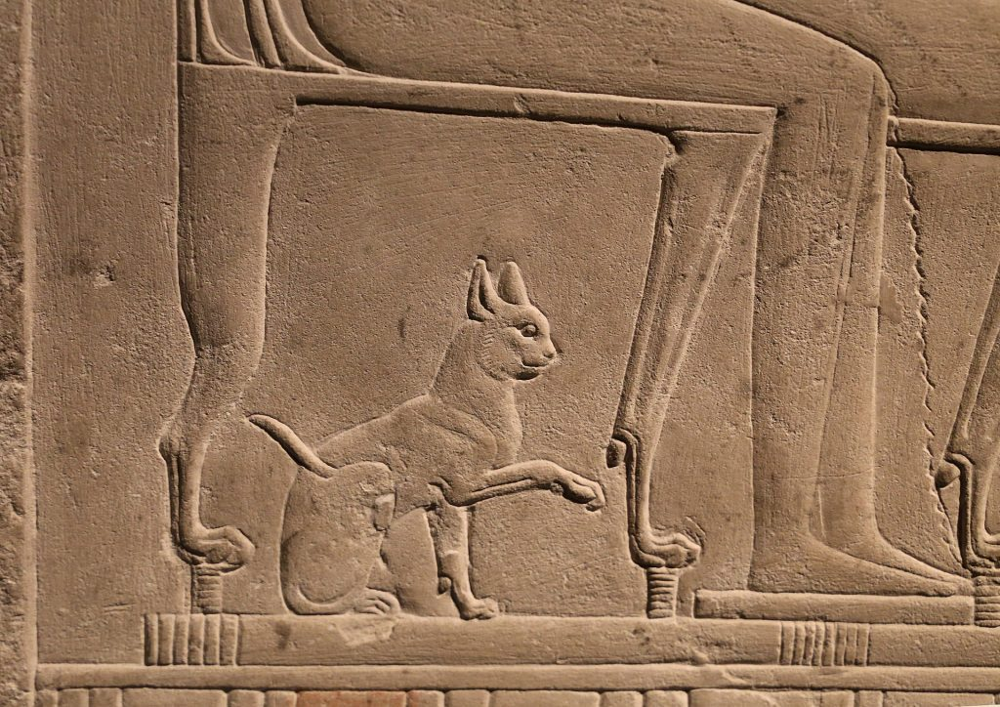
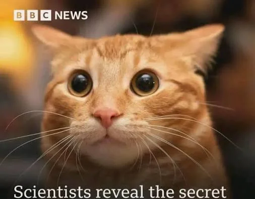
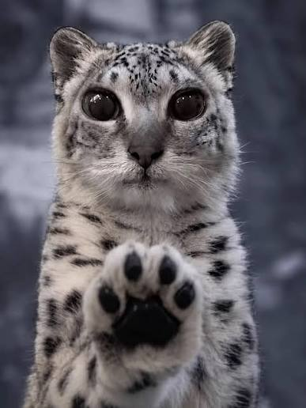
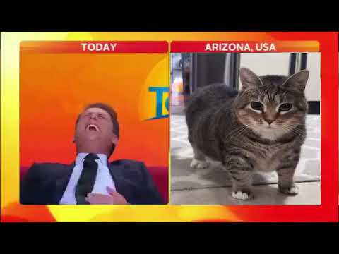

Image from : Photo by 大 董 from Pexels: https://www.pexels.com/photo/relaxed-gray-tabby-cat-lounging-by-the-window-33585484/
What is the cat?
States of cats
- cats can be loaf
- cats can be liquid
- cats can be gas
Loaf cats ...🍞

Liquid cats ...💧

Image from : https://ca.pinterest.com/pin/200128777176547738/
Gas cats ...💨

Why is this important?
This is important because cats are going to rule the world just like they did in ancient Egypt

They have already infiltrated media


